2015/08/28
18:00
Twitter、始めました！！！
当アカウントでは、9/19(土)・9/20(日)に開催される144th開成祭の参加団体「数学研究部」について情報を発信していきます。
興味を持ってくださった方、ぜひフォローやリツイートをよろしくお願いします～～！
#開成数研
19:00
最近、、、数学が好きだ！
#開成数研 #がっこうぐらし
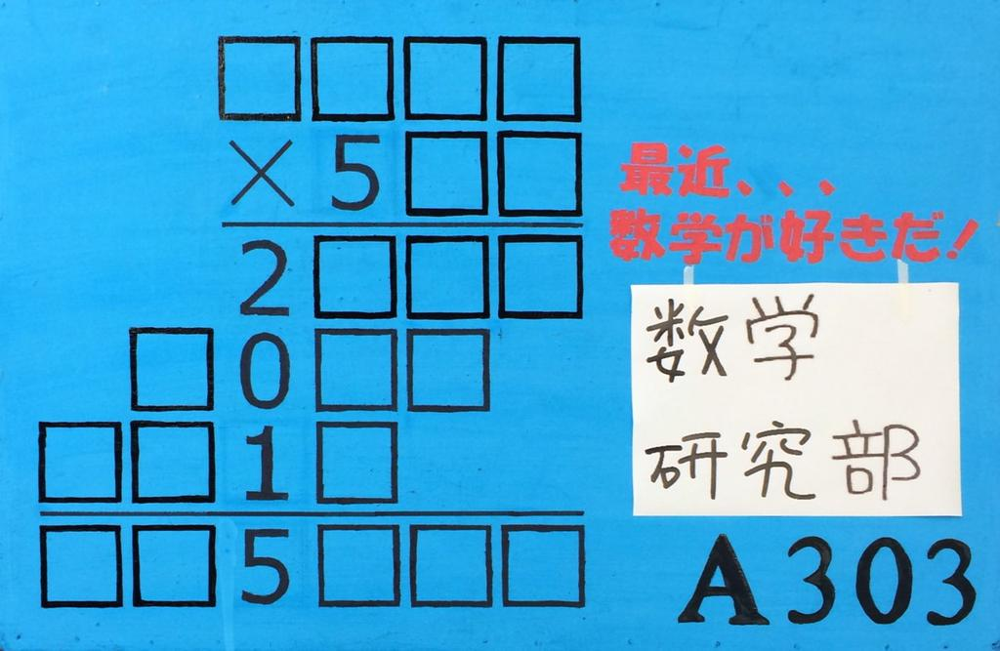
2015/09/01
15:02
現在、部誌の輪転作業中です。
文化祭で配布するのでぜひお越しください!
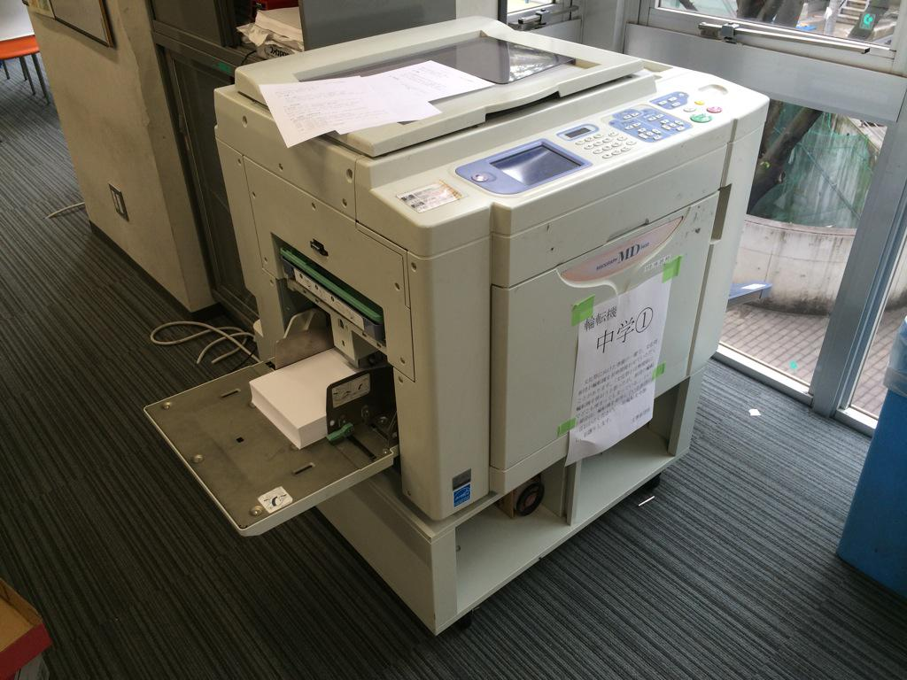
15:34
輪転中・・・・・
#開成数研
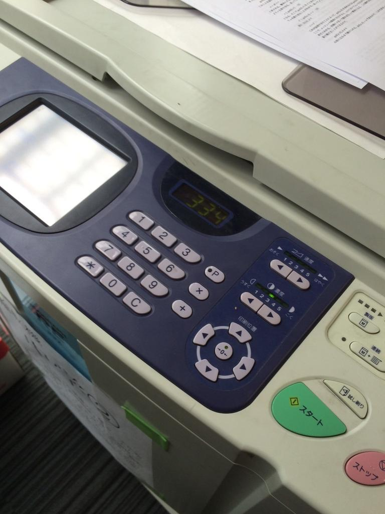
2015/09/04
11:27
製本始まります。
#開成数研
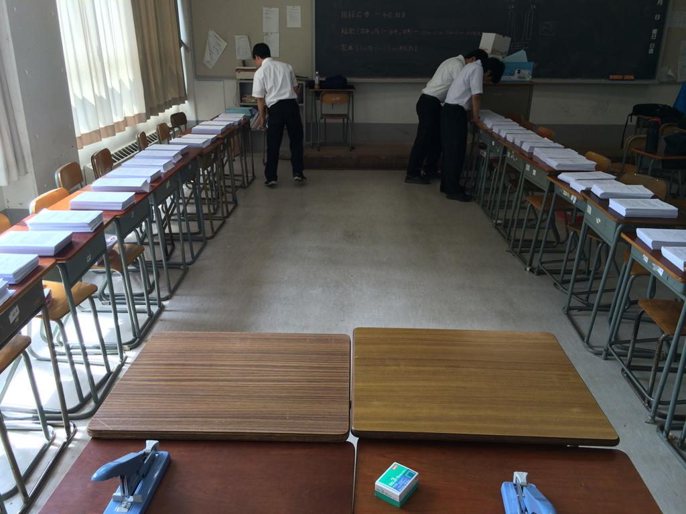
11:39
一冊目完成
#開成数研
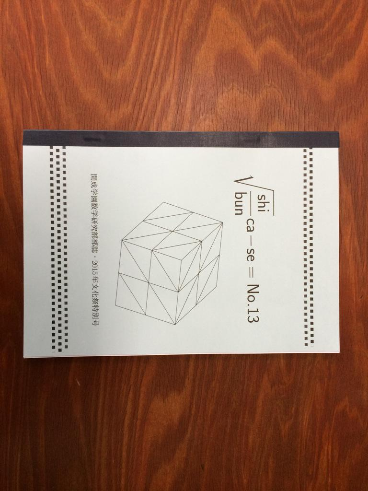
12:20
いかかだったでしょうか。
#開成数研
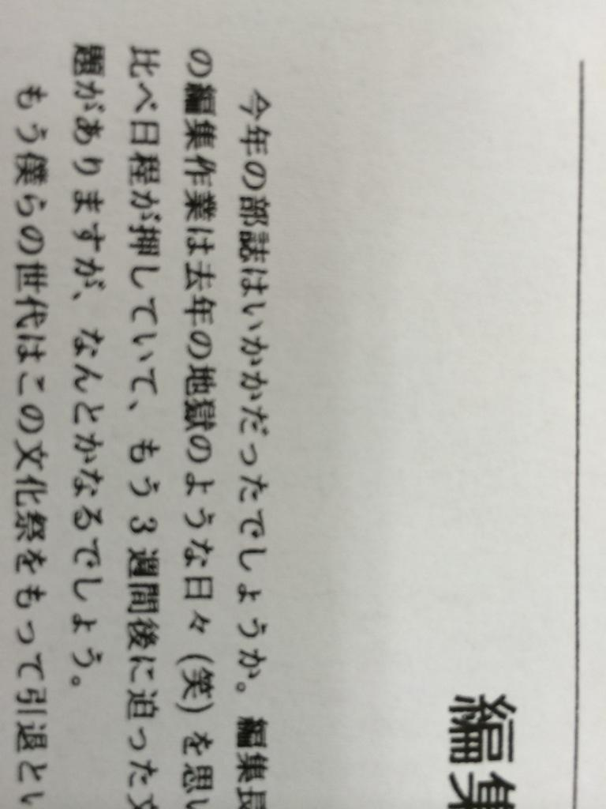
2015/09/05
15:00
階段広告を作りました～～
文化祭の当日に、会場のどこかに貼ります！！
#開成数研 #拡散希望
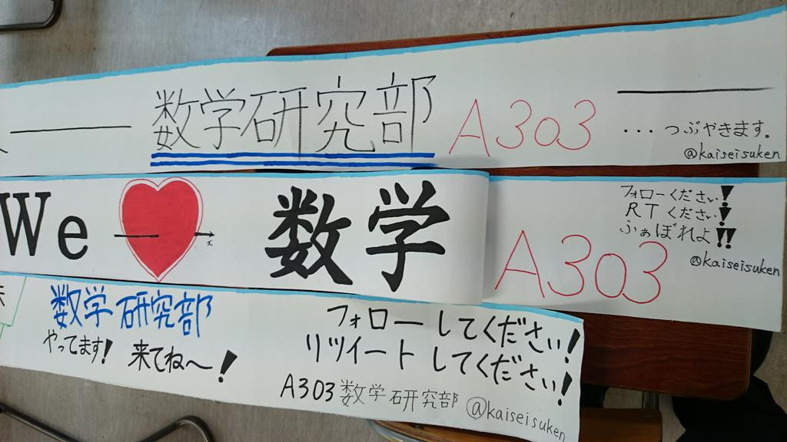
2015/09/08
07:40
文化祭の当日に、壁に貼る広告その1です！！！
今年の数学研究部でお馴染みのデザイン、このアカウントのアイコンにもなっています…！
ちなみにその4までありますよ～～
#開成数研
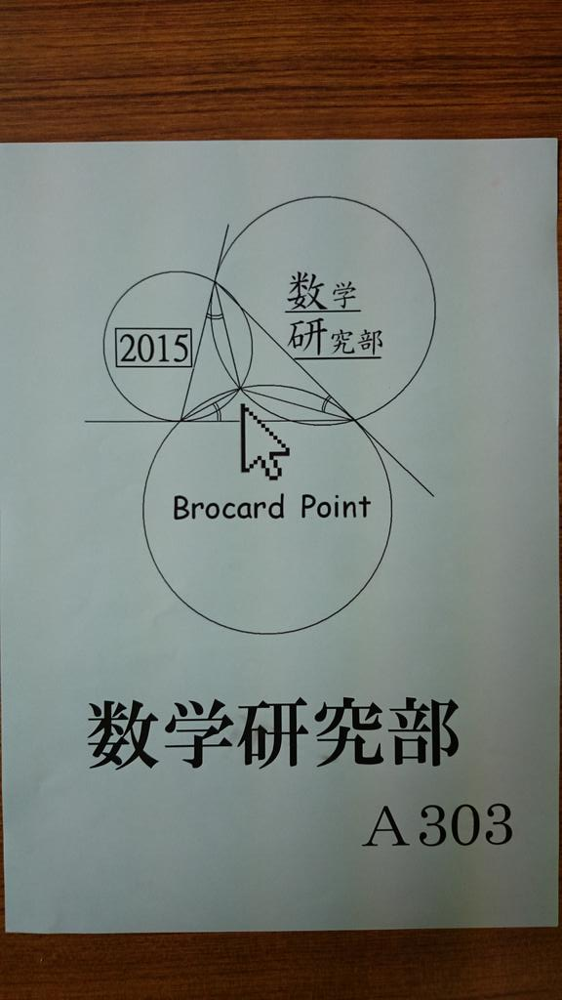
2015/09/09
07:40
文化祭の広告その2です！！！
今年の数研部誌の表紙と同じデザインになっています！！
今年も100ページ近くのものになりました。
部誌は文化祭当日に配布します！ぜひお越しください～～
#開成数研
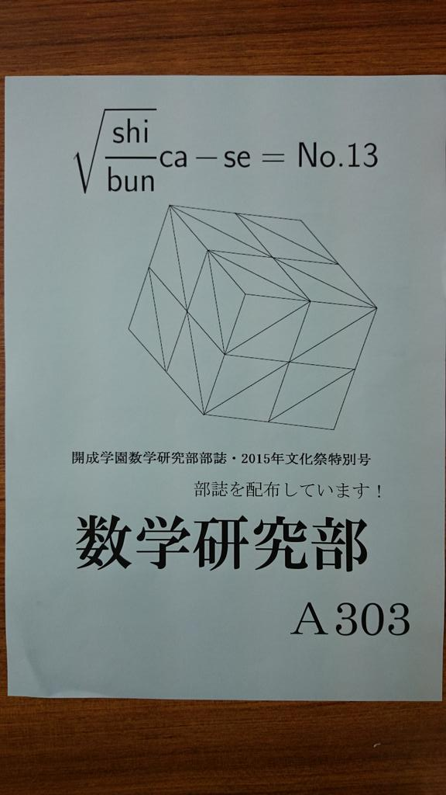
2015/09/10
07:40
文化祭の広告その3です！！！
今年のグランプリ問題の第一問となっている虫食い算です。
廊下装飾や看板にも載せているので、もう見たよ～という方も多いかもしれません。
皆さんは何分で解けますか…？
#開成数研
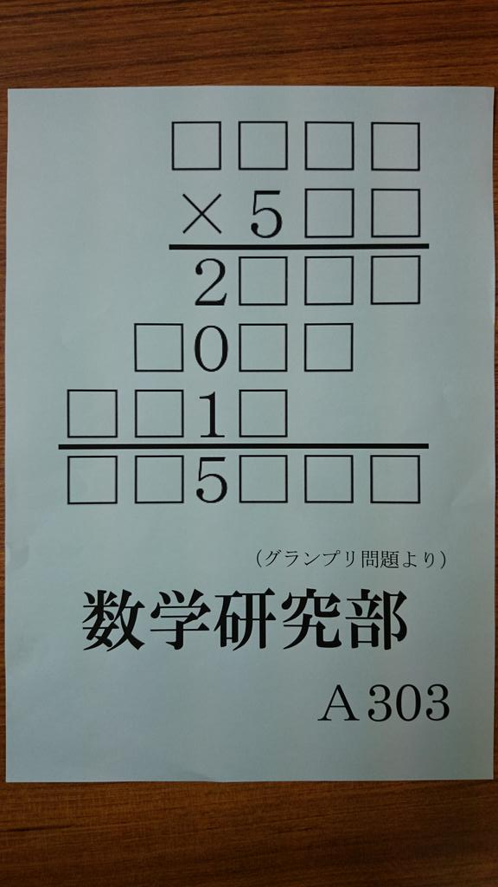
2015/09/11
07:40
文化祭の広告その4です！
……はぁ、好き。。。
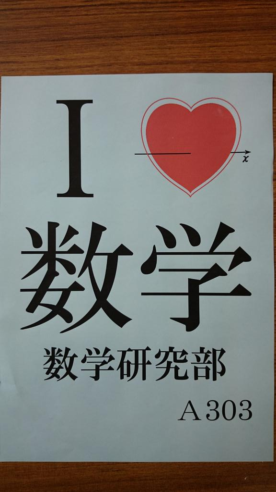
2015/09/12
09:00
ちょうど一週間、ついに文化祭が始まります！！！！！
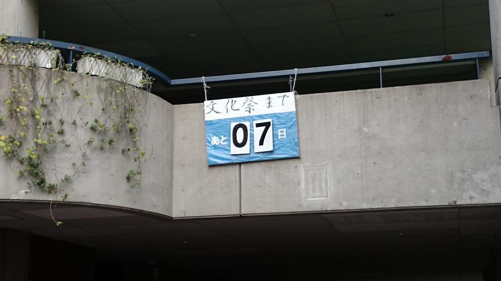
2015/09/16
20:00
💕しぶんけーす💓文化祭パンフレット💕
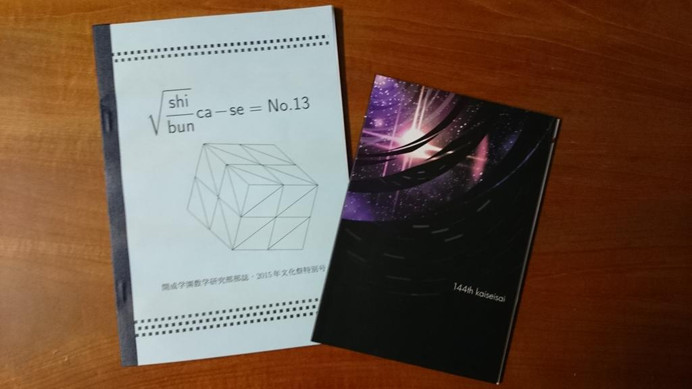
2015/09/18
22:00
144th開成祭、いよいよ明日です！
準備も終了しつつあり、校内は文化祭一色といった様相です。
今週土日はぜひ西日暮里駅より徒歩すぐの開成祭にお越しください！
そしてぜひ数研にもいらっしゃってください！万全を期してお待ちしております！！！
2015/09/19
07:30
本日から2日間、文化祭です！！！！！
ぜひ「A303 数学研究部」にお越しください～～
#開成数研
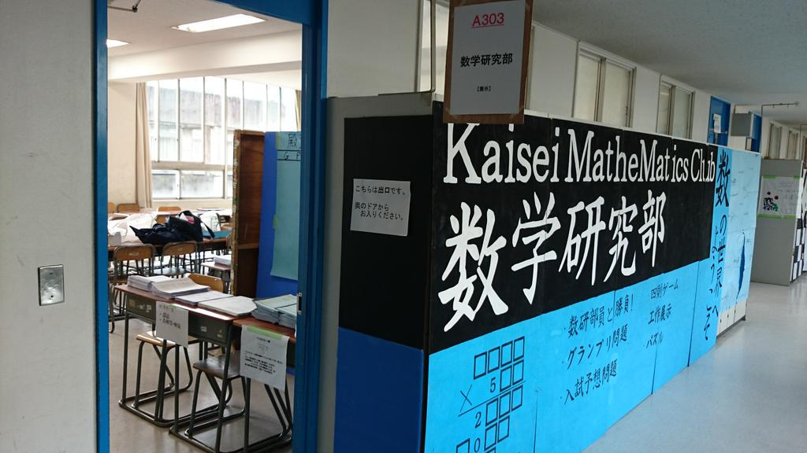
08:30
こちらのTシャツを着ている数研部員がブースでお待ちしております！！！
#開成数研
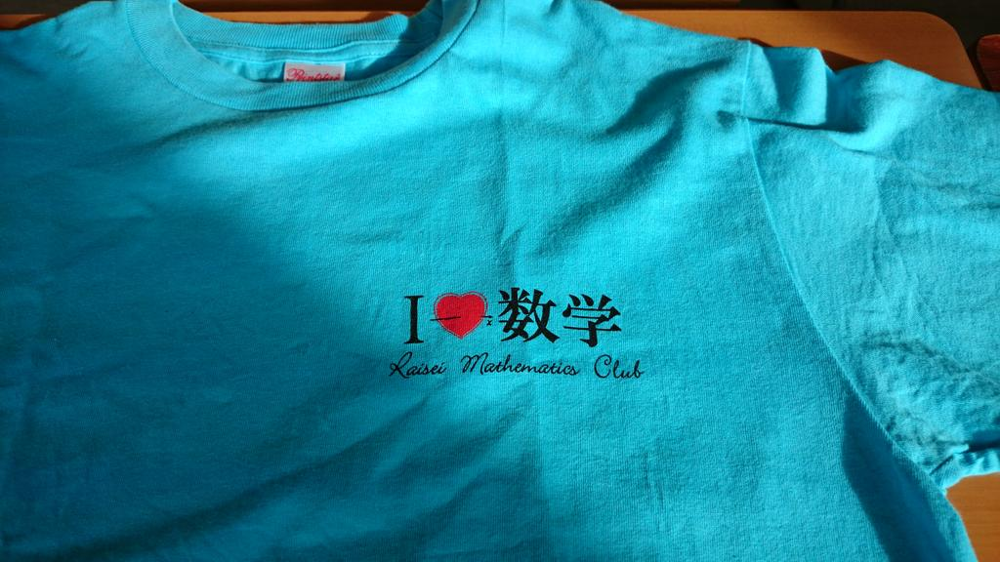
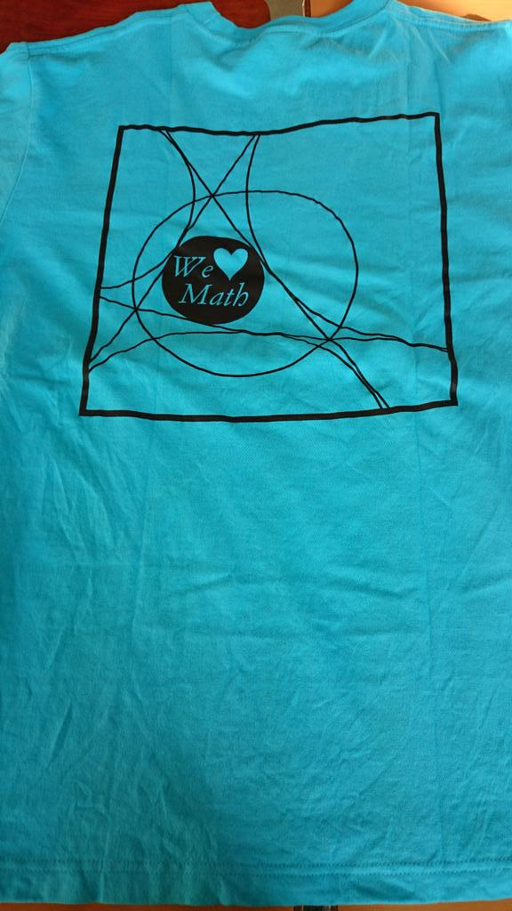
08:50
数研ファイト！！！！！ #開成数研